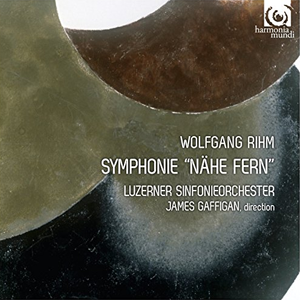

Il était urgent d'accueillir un musicien allemand dans cette galerie contemporaine. J'aurais pu choisir Helmut Lanchenmann - l'intelligentsia musicologique aurait applaudi - mais c'eût été prendre le risque de perdre la confiance de mes lecteurs, désireux d'entendre une musique raisonnablement intelligible. J'ai donc opté pour Wolfgang Rihm, le seul choix alternatif car aujourd'hui, en Allemagne, les temps sont devenus durs et les très grands musiciens se comptent désormais sur les doigts d'une main.
Alors, me direz-vous, pourquoi tant de retard ? C'est qu'avec Rihm, rien n'est simple, c'est le moins qu'on puisse dire. Comme un fait exprès, tout le monde s'y est mis pour rendre le problème encore plus ardu : les commentateurs de la première heure, les exégètes actuels et même le compositeur. Voyons cela à tête reposée mais soyez prévenus, ce ne sera pas plus simple pour vous que cela ne l'a été pour moi.
Les premiers observateurs de l'oeuvre de Rihm ont été tellement déboussolés qu'ils ont accumulé les commentaires inappropriés. L'ascension publique de Rihm n'a véritablement commencé qu'en 1974, lors de la création de Morphonie, dans le cadre du festival contemporain de Donaueschingen. A cette époque, bien que 30 années aient passé depuis l'extinction des feux de la dernière guerre, des cicatrices étaient encore bien présentes, y compris en musique. Les temps n'étant guère au divertissement musical, en Allemagne encore moins qu'ailleurs, la seule musique contemporaine recevable était volontairement ardue et cérébrale. Dans ce tumulte, Morphonie, a certes pu paraître en rupture avec l'avant-garde spartiate mais de là à résonner aux oreilles de certains comme émargeant au courant dit de la "nouvelle simplicité", il y avait de la marge. Quelques musiciens honorés par ailleurs sur ce site (Arvo Pärt, John Tavener, Gavin Bryars et en fait beaucoup d'autres, ...) appartiennent clairement ce courant, l'écoute de leur musique ne laisse aucun doute à ce sujet, mais quel rapport précisément avec le modernisme appuyé de Morphonie, peu susceptible de draîner les foules vers le concert ? Rihm a d'ailleurs protesté contre ce rapprochement, d'abord parce qu'il est abusif et ensuite parce qu'il n'a jamais accepté de se laisser réduire à quelque simplicité que ce soit : il a toujours revendiqué une complexité (technique) à ne pas confondre avec la complication (inutile).
Les exégètes actuels ne rendent pas davantage service à l'oeuvre de Rihm lorsque croyant sans doute bien faire, ils commentent son oeuvre en des termes complètement sybillins. Le compositeur détient, en effet, et bien involontairement, je l'espère, le triste record du nombre des notices de CD abstruses. Le label Kairos a fait très fort dans ce domaine et même en admettant que certaines excès soient imputables à une traduction défectueuse, on devine que l'original allemand ne devait guère briller d'une plus grande clarté, je cite : "Dans l'oeuvre de Rihm, les modèles de protection fondés sur la pensée historico-philosophique sont substitués (sic) par la conception de la composition comme expérience faite de soi-même dans un effort labyrinthique poursuivi de manière manique". Encore plus fort (oui c'est possible) : "Tout cela met en évidence un aspect essentiel de la dialectique de l'acte de composition : encapsuler en un moment synchronique l'enchaînement des moments critiques transitionnels, de sorte à faire une colligation des formes discrètes qui, dans le cadre évolutif, constituent une progression continue". Je précise que ces notices concernent des enregistrements distincts et qu'elles ont été rédigées par des musicologues allemands différents, cela ressemble à un complot ! Qu'est-ce qui a pu justifier de tels excès langagiers et à qui ce charabia peut-il être d'une quelconque utilité ?
Loin de moi l'idée que Rihm ait cherché à encourager ces formes d'obscurantisme mais ses nombreux écrits, nourris de littérature et de philosophie, versent eux aussi fréquemment dans un verbiage faussement savant comme si le compositeur avait à se justifier d'une oeuvre difficilement recevable par un large public.
Ses textes les plus intéressants concernent les recommandations à l'adresse des étudiants dans le cadre de son enseignement récurrent à la Hochschule für Musik Karlsruhe. Vous pouvez en prendre connaissance partielle dans une compilation traduite depuis peu en français sous le titre générique "Fixer la Liberté ? : Ecrits sur la Musique". C'est un compendium d'articles rédigés séparément dans un style aussi richement compliqué que celui des auteurs qu'il apprécie, de Hölderlin à Heidegger en passant par Nietzsche et Arthaud, c'est dire. De toute évidence, Rihm préfère l'analyse esthétique à l'analyse technique : en cela, il se distingue de ses maîtres de l'école postsérielle, en particulier Pierre Boulez, au risque de se perdre dans des argumentations filandreuses.
Car Rihm ne manque pas d'idées autant littéraires que musicales, qui fusent dans toutes les directions, avec cet espoir qu'il en restera bien quelque chose. L'une d'elle revient avec insistance, où il rapproche son geste créateur de celui du sculpteur, toujours prêt à façonner la matière sonore sans avoir toujours la conscience intiale exacte de ce que sera l'oeuvre achevée. Il ne faut pas chercher ailleurs l'origine de ce besoin de reprendre l'oeuvre écrite pour la refondre différemment, à la manière du plasticien qui pris de fantaisie ou de doute retrancherait de la matière ici pour en rajouter ailleurs. Non que Rihm renie l'oeuvre antérieure mais plutôt qu'il lui trouve une alternative en extension. Ainsi Kolchis (1992) deviendra Frage (2000) et, encore plus sûrement, l'aride Gejagte Form (1996) se déploiera en les luxuriantes Jagden und Formen (2001). Cette dernière oeuvre pourrait vous servir d'objectif : sa complexité n'est que richesse, capable d'occuper vos heures d'écoute à condition que vous vous en donniez la peine. N'est-ce pas une bonne définition de l'oeuvre d'art qui compte?
Le catalogue des oeuvres de Rihm (non à jour depuis 2009) ne présente aucune évolution marquante au niveau de la complexité des oeuvres, comme cela s'est produit chez tant de compositeurs contemporains, lassés par les excès de l'avant-garde. Cependant quelques oeuvres récentes marquent un retour plus assumé vers le passé. Eplucher le catalogue complet étant une opération aussi ardue que la musique qu'elle sous-entend, je vais modestement tenter de vous aider à explorer cette oeuvre gigantesque et polymorphe.
Tous comptes faits, il me semble qu'il est judicieux de commencer par la musique pour ensembles instrumentaux, petits ou grands. De fait, Rihm n'est jamais aussi accessible et finalement séduisant que lorsqu'il écrit pour les orchestres de toutes dimensions éventuellement accompagnés de formations chorales.
Les oeuvres pour ensembles instrumentaux plus ou moins étoffés sont nombreuses et particulièrement recommandables. Rihm y fait preuve d'une virtuosité convaincante dans tous les registres de l'instrumentation : commencez en douceur par Erscheinung (1978), une superbe étude pour cordes d'après Schubert, puis enchaînez avec Lândler (1979), pour 13 cordes, répandant une plénitude éloignée des fracas à venir. Vous êtres maintenant prêts pour affronter Etude d'après Séraphin (1997), avec adjonction d'électronique et Marsyas (1999), d'un modernisme raffiné. Le grand Poème dansé Tutuguri (1982) (Part 1, Part 2) que vous aborderez par la tellurique Schwarzer und roter Tanz se souvient du Sacre du Printemps tandis que Lichtzwang (1976) se révèle beaucoup plus conciliant quoique daté de la même époque. Unbenannt IV (2004), Vier Gedichte - Fassung für Singstimme und Orchester, un lointain héritage wagnérien. Vous laisserez de côté dans un premier temps au moins quelques oeuvres nettement ardues : Sphäre um Sphäre, Dunkles Spiel, Dis-Kontur, Et Nonc II et Chiffre-Zyklus.
Les oeuvres concertantes sont nombreuse et de difficultés variables : La Musique creuse le Ciel (1979), pour deux pianos & orchestre est d'accès moins aisé que et Sotto Voce (1999), pour piano & orchestre. L'année 2014 a vu la naissance de deux concertos, le Concerto n°2 pour piano et surtout le Concerto pour cor, nettement plus original. Certaines oeuvres concertantes telle la Musique creuse le Ciel, pour deux pianos & orchestre. Lichtes Spiel écrit pour Anne-Sophie Mutter est une méditation pour violon et orchestre pleine d'élégance respectueuse comme souvent même en musique contemporaine des possibilités de l'instrument, Concerto pour violoncelle en un mouvement (plage 1).
Rihm est tout aussi bon dans le genre de la grande symphonie. Il n'en a numéroté que trois au motif déjà évoqué que les suivantes ont fait l'objet de tant de refontes que cela aurait compliqué leur numérotation. La Symphonie n°1 a été écrite alors que le compositeur n'avait que 17 ans, il terminait à peine ses études auprès de Karlheinz Stockhausen. Elle est déjà d'une étonnante maîtrise technique.
La Symphonie n°2 (1975) est aussi une oeuvre de jeunesse. Ecrite dans un langage sériel très accessible, elle vous plaira sans doute davantage que la première. Un CD paru chez Hanssler les propose toutes les deux en même temps que quelques compléments de choix, il mérite toute votre attention.
La Symphonie n°3 (1979) est nettement plus longue et d'une éloquence remarquable. Elle fait partie des oeuvres incontournables du Maître grâce en partie à ses références aux musiques du passé.

Rihm a ensuite repensé le genre symphonie dans une conception élargie, à géométrie variable dans le temps comme dans l'espace. Nähe Fern (Proximité lointaine, 2012) est une commande de l'Orchestre de Lucerne qui attendait que chacun des quatre mouvements s'inspire d'une symphonie de Brahms de même numéro (à débusquer). Rihm y a ajouté un cinquième mouvement de son choix, où un baryton accompagne l'orchestre sur un poème de Goethe "Dämmrung senkte sich von oben". Vers une Symphonie fleuve, le cycle des 6 épisodes de Verwandlung (étalé 2014) (Part 3 et Part 6). , Verwandlung 3 (2008) - à découvrir - mélange hardiment des réminiscences à la fois de Brahms, Mahler et Schönberg.
Le moment est venu de compléter cet inventaire par quelques grandes oeuvres vocales : Requiem Strophenrécent ???, le très inspiré Quid Est Deus (2007) et Que la plume de Rihm soit capable d'écrire tout autre chose est déjà sensible dans Deus Passus, une Passion selon Saint-Luc construite sur le modèle ??? des passions de Bach. On observe une fois de plus combien les compositeurs d'aujourd'hui puisent le meilleur de leur inspiration dans l'illustration de textes religieux. La réussite de cette passion se retrouve intacte dans d'autres oeuvres sacrées, 7 Passion Motets voir plus loin> - écrite pour l'ensemble, Singer Pur, superbe ! - , ).
Les autres domaines ne sont pas forcément inintéressants mais ils sont plus ardus d'où il semble inutile que vous vous y risquiez si vous n'avez pas apprécié l'inventaire précédent. Un souci de complétude exige pourtant qu'on les évoque.
Rihm a pas mal écrit pour la voix soliste accompagnée (Das Gehege, 2005) ou pour choeur a capella se révèle parfaitement maîtrisée comme en atteste 7 Passion Motets, écrits, entre 2001 et 2006, pour l'ensemble Singer Pur. Astralis (2001) traite le choeur à la manière éthérée astrale qui lui convient toujours très bien.
Rihm a abordé l'opéra à plusieurs reprises soit sous forme réduite de chambre (Faust und Yorick (1976), Jakob Lenz (1978), le plus joué) soit sous forme théâtrale complète (Die Hamletmaschine (1986), Die Eroberung von Mexico (1991), et plus récemment Dyonisos. Bien que le compositeur y demeure attentif à la ligne du chant, je ne recommande pas de commencer par là.
Les partitions pour piano ne courent pas les rues, la plus importante étant constituée de 7 Klavierstück (n°7). Cette pénurie s'explique sans doute par le fait que le compositeur ne peut déployer ses talents combinatoires.
Le quatuor à cordes est un (autre) noyau dur de l'oeuvre de Rihm et c'est un genre auquel il semble tenir si l'on en juge par le nombre d'oeuvres composées (on dépasse la douzaine et ce n'est sûrement pas fini). je doute que vous partagiez son enthousiasme avant longtemps. Tous ne sont pas numérotés explicitement ce qui complique la tâche. Voici un jeune quatuor qui s'investit pas mal dans le (n°4), n°10 (Battaglia dans la tradition). Faites cependant un effort avec le n° 13, qui fait preuve d'une grande virtuosité d'écriture. chamber music in the wake of Robert Schumann (Fremde Szenen) ?
Fait rare pour un musicien d'aujourd'hui, la discographie de Rihm est abondante presque pléthorique : L'oeuvre de Rihm a en effet reçu les faveurs des éditeurs allemands, pressés d'honorer une tradition d'excellence en train de se perdre. La relative faiblesse de la concurrence Outre-Rhin a certainement facilité cette large diffusion. Cette musique qu'on voudrait apprécier davantage rebute cependant trop souvent les oreilles non préparées d'où il ressort qu' un tri est nécessaire si elle veut figurer au répertoire des mélomanes cultivés. Autant dire que le titre de Beethoven actuel qu'on lui décerne volontiers Outre-Rhin n'est pas encore d'actualité le Maître de Bonn n'ayant ppas tant écrit mais de façon nettement plus intelligible pour les oreilles de ses contemporains.
Vous aurez peut-être remarqué que certaines oeuvres de Rihm portent des titres français; ce n'est ni une erreur ni une fantaisie : Rihm est féru de culture française et la France lui a rendu le compliment en le décorant Officier dans l'Ordre des Arts et des Lettres.
Contrairement à ce qu'on écrit parfois, Rihm n'a pas reçu le Grawemeyer Award en 2015 (Le prix n'a pas été attribué cette année-là). C'est étonnant et certainement anormal car quelques oeuvres récentes remplissaient manifestement tous les critères d'attribution mais le jury du Grawemeyer est bien connu pour favoriser sa conception du mouvement postmoderne.